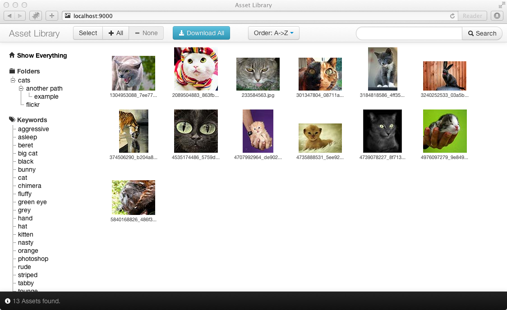

Simple asset discovery and download
This is a very simple minded 'Digital Asset Manager' that allows 'asset files' to be served up from a directory, with previews, thumbnails and searchable metadata.
It uses the Play Framework 2.0.4 currently (will eventually port to 2.1) but a precompiled version will be made available that only requires the Java Runtime.

no database - designed for less than 10,000 assets
no external dependences (builds to a standalone .jar file)
all data loaded from files at startup and NEVER changes:
a simple 'single page' UI for searching / downloading assets (using Twitter Bootstrap)
search by folder, keyword, description
sort by name, size, age
URLs that can be emailed (e.g. "here are the latest assets in the 'Kittens' folder")
optional folder archive generation
optional external Authentication (via wordpress plugin)
local 'admin' mode for single-user editing of JSON metadata
to update files, simply copy new files to server and restart simple-dam app
The main idea is to be as simple as possible. We had a bunch of assets and wanted to make them available to people to browse and download. Previously we'd used asset managers that attempted to generate thumbnails and metadata from the asset files themselves, but these were problematic and we realised they were over-complicated.
The concept for simple-dam is that the preview and thumbnails are supplied as jpegs and the meta-data is just in a simple JSON file for each asset. The application simply reads all these files at startup and then serves searches out of RAM directly. No database! Because this is designed for a small-ish number - around 10,000 - we can keep all the metadata in RAM easily and not have slow searches.
We store the assets in revision control and simply sync them on to the server and restart the application. As simple-dam just treats them as files, use whichever revision control you like, or dropbox, rsync, whichever you want.
We use a Wordpress site to store the list of users and have an authentication plugin for it (this will be released later). We wanted to provide a blog to run with the assets, so rather than complicate simple-dam with user management, we simply used wordpress' user database.
To add assets, run the site from your local machine and enable 'admin' mode to allow edit of metadata, including mass-edit of keywords. Then simply commit modified files to revision control. Alternatively you can simply create the JSON by hand if you want.
We have a script file for Adobe Photoshop that generates thumbnail & preview files for any file it can read, which is most image formats and PDF, AI files. But you can generate the files from any application, or mix and match.
Basically, we're solving only the problem we needed to and using our existing tools (Photoshop, revision control systems, Wordpress) to do the rest. This has worked out very well for us! We expect to extend this in the future to do more and maybe even hook it up to a database for multi-user editing, but in its simple form it works perfeclty well!
A separate github repository of example assets has been created. You can simply download this and point your configuration's "assetLibrary" path at it to see how to arrange asset previews, thumbnails and metadata.
simple-dam-0.3.0.zip (40Mb) - should require only a Java Runtime Environment